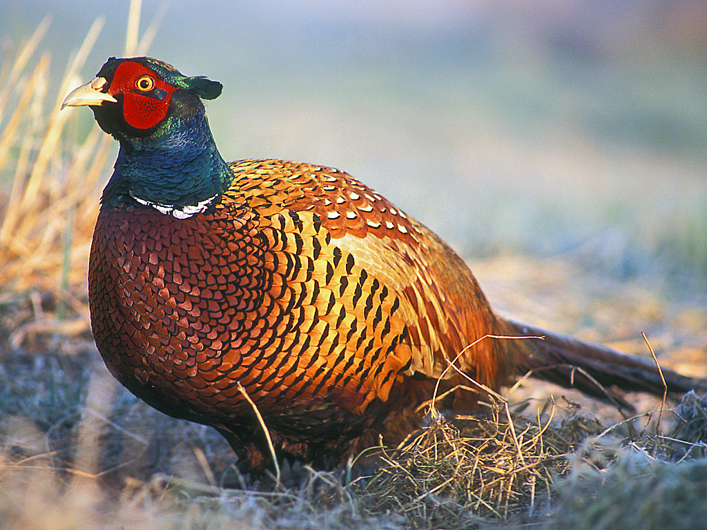
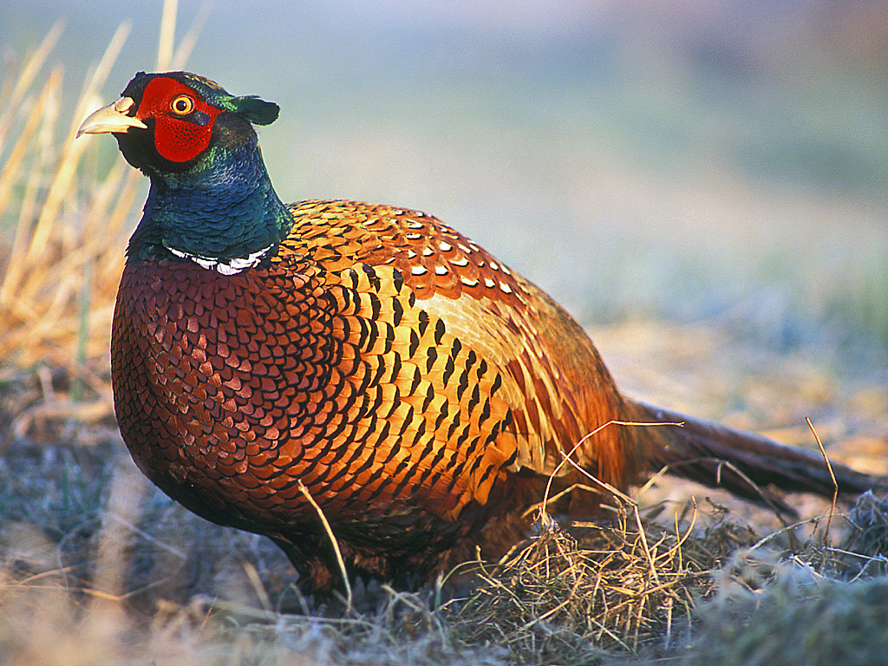

Біосферний заповідник «Асканія-Нова» ім. Фальц-Фейна — науково-дослідна установа в системі Національної академії аграрних наук України, державний заповідник, заснований 1898 року Фрідріхом Фальц-Фейном.
Назву місцевості дав один з її попередніх власників — герцог Фрідріх Фердинанд Ангальт-Кетен-Плесський у 1841 році на честь власного маєтку Асканії в Німеччині. Звідти — «Асканія-Нова».
У 1920-х роках заповідник носив іншу назву — «Чаплі». Цей топонім походить від давнього українського терміна «чапеля», або «чапля», що означає «під» (западина). До нашого часу цей термін застосовується лише до найбільшого зі збережених степових подів, що також розміщений у заповіднику — Великий Чапельський під.
Асканія-Нова є унікальним не лише для України, а й для всього світу. Це найбільший степовий заповідник Європи, який щороку відвідує близько 140 тисяч туристів.
Географія
Заповідник міститься на Причорноморській низовині, яка являє собою пласку, дещо нахилену на південь рівнину, що прилягає до Чорного й Азовського морів. Розташована між дельтою Дунаю на заході й річкою Кальміус на сході. Висоти від −5 (поблизу Куяльницького лиману) до 179 м, у середньому 90…150 м.
За тектонічною будовою низовина є частиною Причорноморської западини, заповненої майже горизонтальними потужними шарами осадових порід, переважно морських відкладів палеогену та неогену (глини, піски, піщано-глинисті і піщано-вапнякові породи, вапняки), на яких лежать континентальні відклади антропогенового віку — червоно-бурі глини, ліси, лісоподібні суглинки. Третинні породи відслонюються лише в долинах річок і подекуди — на березі моря.
Великий Чапельський під
Великий Чапельський під — це територія з нижчим рівнем ґрунту десь на 9 метрів порівняно з іншими ділянками, звідси назва — під, низовина. Саме тут скупчуються талі води, що важливо для заповідника. Великий Чапельський під є водно-болотним угіддям заповідника міжнародного значення. Тут табуни диких копитних тварин, загалом до 1000 голів, більшу частину року перебувають на вільному випасі.
Серед рідкісних рослин роду гігрофітів — зіркоплідник частуховий (Damasonium alisma). До Червоної книги України занесені наступні представники асканійської флори: карагана скіфська, ковила українська, ковила Лессінга, ковила волосиста, тюльпан Шренка, тюльпан скіфський. Ніде, крім Асканії, не зустрічається рябчик шаховий або великий.
Історія заповідника
1800-ті: заснування і розквіт
Територія була заселена ще в давні часи. Тут знайдено мідні прикраси доби пізньої бронзи, виявлено поховання кочівника з конем, кілька кам'яних баб XI —XIII століття. Неподалік сучасного селища пролягав один із чумацьких шляхів. Саме в цьому місці чумацький шлях перетинався з поштовою дорогою, що йшла з Мелітополя на Олешки. На перехресті цих шляхів і виникло поселення Чаплі, яке вперше згадується в документальних матеріалах 1822 року.
Після закріплення Російської імперії на узбережжях Чорного та Азовського морів наприкінці XVIII століття почалося більш жваве заселення цих місць. Необжиті землі, царський уряд роздавав за невисокими цінами. 1828 року німецький герцог Ангальт-Кетенський придбав тут 42,3 тис. десятин. Через 13 років у степу поблизу Чапель виник хутір, названий герцогом на честь власного маєтку Асканія у Німеччині Асканією-Новою. На своїх землях герцог почав розводити мериносових овець, але господарство з часом занепало і 1856 року він продав маєток іншому колоністові — Фейну. Згодом Фейн поріднився зі ще одним німецьким поміщиком — Фальцем. Скуповуючи навколишні землі, Фальц-Фейни швидко стали «королями вівчарства» на півдні України. В маєтку налічувалося близько 200 постійних робітників, всього тут мешкало 312 осіб, 1831 року була відкрита школа. Посезонно на літніх польових роботах працювали сотні найманих робітників. Засновник Асканійського заповідного комплексу нащадок королів вівчарства Фрідріх Фальц-Фейн був широко освіченим біологом і добрим організатором.
1874 року в Асканії Фрідріхом Фальц-Фейном був заснований зоопарк. Саме йому дісталась «Асканія-Нова» у спадок, з-поміж численних маєтків родини на території нинішніх Херсонщини і Запоріжжя. Метою створення зоопарку була передова ідея Ф. Е. Фальц-Фейна навчитись відтворювати у напіввільних умовах рідкісні види тварин, щоб згодом могти поновити їх у природі в разі вимирання останніх. Також, одним з перших в регіоні він розпочав кільцювання птахів під час міграції. У 1887 році було створено ботанічний сад.
У 1898 році. Ф. Е. Фальц-Фейн оголошує про відкриття заповідника — недоторканої ділянки цілинного степу. Зберегти її з метою подальшого вивчення та спостереження за природними процесами землевласника надихнув відомий ботанік Йосип Пачоський.
1900-1920-ті: період становлення
Ще в роки Української народної республіки 1 квітня 1919 року була оголошена народним заповідним парком, а згодом, вже у СРСР 8 лютого 1921 — Державним степовим заповідником УРСР. На Асканію-Нову було покладено завдання зберігати і вивчати природу цілинного степу, а також акліматизувати та вивчати можливо більше число видів тварин і рослин, які мають народногосподарське значення. При Асканії-Новій були створені науково-степова станція, зоотехнічна станція з племінним господарством, фітотехнічна станція та інші наукові заклади. Значно розширено зоопарк і ботанічний сад.
1926 року заповідник перейменували на «Перший державний степовий заповідник „Чаплі“ ім. Х. Г. Раковського» (саме його декретом заповідник був оголошений 1919 року).
1930-ті: занепад
З 1932 року на базі державного заповідника Асканія Нова, до 1956 року — Всесоюзний науково-дослідницький інститут гібридизації та акліматизації тварин імені М. Іванова, сучасна назва Інститут тваринництва степових районів ім. М. Ф. Іванова «Асканія-Нова» — Національний науковий селекційно-генетичний центр з вівчарства. У заповіднику починалася наукова діяльність багатьох вчених, зокрема С. І. Медведєва, І. К. Лопатіна.
1933 року у заповіднику відбулись масові арешти переважної більшості працівників (в тому числі всього керівництва і наукового складу), після чого заповідник фактично перестав існувати як природоохоронна установа та втратив свій номінальний статус.
1980-2000-ні: відновлення

У 1983 році заповідник «Асканія-Нова» отримав статус «біосферний заповідник» ЮНЕСКО, що дало поштовх поновленню його юридичного статусу.
1984 року, заповідник внесено до Міжнародної мережі біосферних резерватів ЮНЕСКО. Після цього, у 1985 році в заповіднику проходили знімання серії «Остання ділянка незайманого степу» (англ. Last of the Virgin Steppe) для британського документального телевізійного серіалу «Даррелл в Росії», що розповідає про візит в Радянський Союз відомого англійського письменника-натураліста Джеральда Даррелла.
1989 року у складі УНДІТ «Асканія-Нова» було виділено у самостійну держбюджетну установу Біосферний заповідник «Асканія-Нова».
У 1995 році було поновлено статус заповідника.
З квітня 1990 по грудень 2021 року посаду директора обіймав еколог та зоолог Гавриленко Віктор Семенович.
З грудня 2021 року посаду директора обіймає ботанік Шаповал Віктор Володимирович.
Російсько-українська війна
Докладніше: Російсько-українська війна (з 2014) та Російське вторгнення в Україну (2022)
Вже о 9-й ранку 24 лютого 2022 року автодорога до смт Чаплинки опинилась під контролем російських загарбників. Відтоді заповідник перебуває під тимчасовою російською окупацією, через що опинився у скрутному становищі.
Понад рік, до березня 2023 року попри російську окупацію, управління заповідником та виплата заробітної плати робітникам виконувалось з боку України, а більшість працівників продовжували жити в окупації, аби дбати про заповідник. Придбання корму для тварин та інші видатки фінансувались за рахунок пожертв й внесків. У березні 2023 року росіяни з колаборантами встановили в заповіднику окупаційну адміністрацію. Управління заповідником передали Дмітрію Мєщєрякову, на ім'я якого зареєстрували юридичну особу заповідника в Росії.
За інформацією Віктора Шаповала, директора заповідника, російські окупанти вивозили з Асканії-Нови рідкісних тварин. Попри повідомлення у медіа влітку 2023 року про те, що тварини опиняться в Криму, їхньою кінцевою точною призначення виявився Ростов. Там тварини, що перебувають під загрозою зникнення, опинилися в листопаді-грудні 2023-го року. Їхня подальша доля невідома.
Вшанування
У 1998 році виходять монети присвячені 100-річчю біосферного заповідника «Асканія-Нова». 2008 року, «Асканія-Нова» стала переможцем акції «Сім природних чудес України».


У 2009 році цей біосферний заповідник представляв Україну у Всесвітньому конкурсі «New 7 Wonders of Nature» (New 7 Wonders of Nature).
Структура території
Площа біосферного заповідника становить 33 307,6 га, з них 11 054 га — «заповідна зона».
Територія заповідника розділена на три великі частини, нерізко відокремлені одна від одної :
- «Північну»
- Великий Чапельський під
- «Південну»
Ботанічний сад
Під нього відведена територія у 167 гектарів. Перші ділянки саду розплановані ще у 1887 р. На кінець 20 століття колекція рослин досягла більше 1000 видів чагарників та дерев. Краєвиди саду підсилені ставком і павільйоном Грот, де колись знімали давню кінострічку «Діти капітана Гранта».
Зоологічний парк
Заповідник утримує близько 800 різновидів диких копитних та гібридних форм свиней, оленів, коней Пржевальського, бізонів, антилоп, баранів, биків, верблюдів, лам, віслюків куланів, шотландських поні.

Частиною зоопарку є орнітопарк, розміщений поблизу ставків з протоками та острівцями. В орнітопарку нараховують понад 60 різновидів птахів: лебеді, фазани, качки, лелеки, гуси єгипетські та індійські, страуси африканські. Крім того, у заповіднику водяться такі рідкісні для України птахи, як південноамериканський нанду та австралійський ему.
 


Території природно-заповідного фонду, що входять до складу БЗ «Асканія-Нова»
Нерідко, оголошенню національного парку або заповідника передує створення одного або кількох об'єктів природно-заповідного фонду місцевого значення. Внаслідок цього, великий БЗ зрештою поглинає раніше створені ПЗФ. Проте їхній статус зазвичай зберігають.
До складу території біосферного заповідника «Асканія-Нова» входять такі утворення ПЗФ України:
- Дендрологічний парк загальнодержавного значення «Асканія-Нова»
- Загальнозоологічний заказник місцевого значення «Асканійський»
Біорізноманіття
Рослинний світ
Флора вищих рослин заповідного степу, за даними різних досліджень, складала 451—478 видів[14]. За результатами аналізу попередніх флористичних зведень, поточних реінвентаризаційних обстежень 2003—2010 рр. та критичної ревізії гербарних колекцій конспект судинної флори природного ядра заповідника наразі становить 509 видів[15].
У заповіднику виявлено 6 видів судинних рослин з Червоного списку МСОП, 9 видів з Європейської Червоної книги, 20 з Червоної книги України, 2 з Додатку І Бернської конвенції (разом — 26 видів)[16]:
- Астрагал Геннінга (Astragalus henningii (Steven) Klokov) (МСОП, ЄЧС, ЧКУ)
- Астрагал зігнутий (Astragalus reduncus Pall.) (МСОП, ЄЧС, ЧКУ)
- Волошка Талієва (Centaurea taliewii Kleopow) (МСОП, ЧКУ)
- Пісочник жорсткий (Eremogone rigida (M. Bieb.) Fenzl) (МСОП)
- Жовтозілля дніпровське (Senecio borysthenica (DC.) Andrz. ex Czern) (ЄЧС)
- Залізняк гібридний (Phlomis hybrida Zelen.) (ЄЧС)
- Залізняк скіфський (Phlomis scythica Klokov et Des.-Shost.) (ЄЧС, ЧКУ)
- Зіркоплідник частуховий (Damasonium alisma Mill.) (ЧКУ)
- Плодоріжка рідкоквіткова (Orchis laxiflora Lam.) (ЧКУ)
- Карагана скіфська (Caragana scythica (Kom.) Pojark.) (ЄЧС, ЧКУ)
- Ковила волосиста (Stipa capillata L.) (ЧКУ)
- Ковила Лессінга (Stipa lessingiana Trin. et Rupr.) (ЧКУ)
- Ковила азовська (Stipa maeotica Klokov et Ossycznjuk) (ЧКУ)
- Ковила українська (Stipa ucrainica P.Smirn.) (ЧКУ)
- Ламкоколосник ситниковий (Psathyrostachys juncea (Fisch.) Nevski) (ЧКУ)
- Льонок Біберштайна (Linaria biebersteinii Besser) (МСОП)
- Плакун чебрецелистий (Lythrum thymifolia L.) (ЧКУ)
- Руслиця угорська (Elatine hungarica Moesz) (ЧКУ)
- Рябчик малий (Fritillaria meleagroides Patrin ex Schult. et Schult. f.) (ЧКУ)
- Ситник круглоплодий (Juncus sphaerocarpus Nees) (ЧКУ)
- Тюльпан скіфський (Tulipa scythica Klokov et Zoz) (ЧКУ)
- Тюльпан Шренка (Tulipa schrenkii Regel) (ЧКУ)
- Ферула східна (Ferula orienthalis L.) (ЧКУ)
- Часник Реґеля (Allium regelianum A.Becker ex Iljin) (МСОП, ЄЧС, БЕРН, ЧКУ)
- Часник скіфський (Allium scythicum Zoz) (ЄЧС, ЧКУ)
- Щавель український (Rumex ucranicus Fisch. ex Spreng.) (ЄЧС)
До ІІ видання Зеленої книги України (2009) занесені 5 формацій рослинності асканійського степу: мигдалю степового (Amygdaleta nanae), карагани скіфської (Caraganeta scythicae), ковили Лессінга (Stipeta lessingianae), ковили української (Stipeta ucrainicae) та ковили волосистої (Stipeta capillatae).
Тваринний світ
У заповіднику зареєстровано близько 1160 видів членистоногих. Герпетофауна представлена 2 видами земноводних (ропуха зелена, жаба озерна) і 7 видами плазунів (ящірка прудка, вужі звичайний і водяний, мідянка звичайна, полози жовточеревий і сарматський, гадюка степова). До аборигенної теріофауни входять, за різними даними, близько 25 видів ссавців, у тому числі лисиця, заєць сірий, тхір степовий, куниця кам'яна, 11 видів гризунів (бабак степовий, ховрах малий, тушкан великий, сліпачок звичайний, хом'як звичайний, хом'ячок сірий, полівка гуртова та ін.), 3 види кажанів (вечірниця руда, нетопир карлик, лилик двоколірний), білозубка мала; нерегулярно на заповідній території з'являються вовк, сарна європейська, асканійський олень благородний і дика свиня. У різні пори року пролітає понад 270 видів птахів, з яких 107 видів залишаються на гніздування. Серед них є багато раритетних видів тварин, занесених до Червоної книги України та інших природоохоронних документів.
Видатні особистості, що працювали у заповіднику Асканія-Нова
- Станчинський Володимир Володимирович
- Фортунатов Борис Костянтинович
- Браунер Олександр Олександрович
- Шалит Михайло Соломонович
- Десятова-Шостенко Наталія Олексіївна
- Шарлемань Микола Васильович
- Пачоський Йосип Конрадович
- Фальц-Фейн Фрідріх Едуардович
- Медвєдєв Сергій Іванович
- Завадовський Михайло Михайлович
- Козлов Петро Кузьмич
- Сіянко Климентій Євдокимович
- Рібергер Генріх